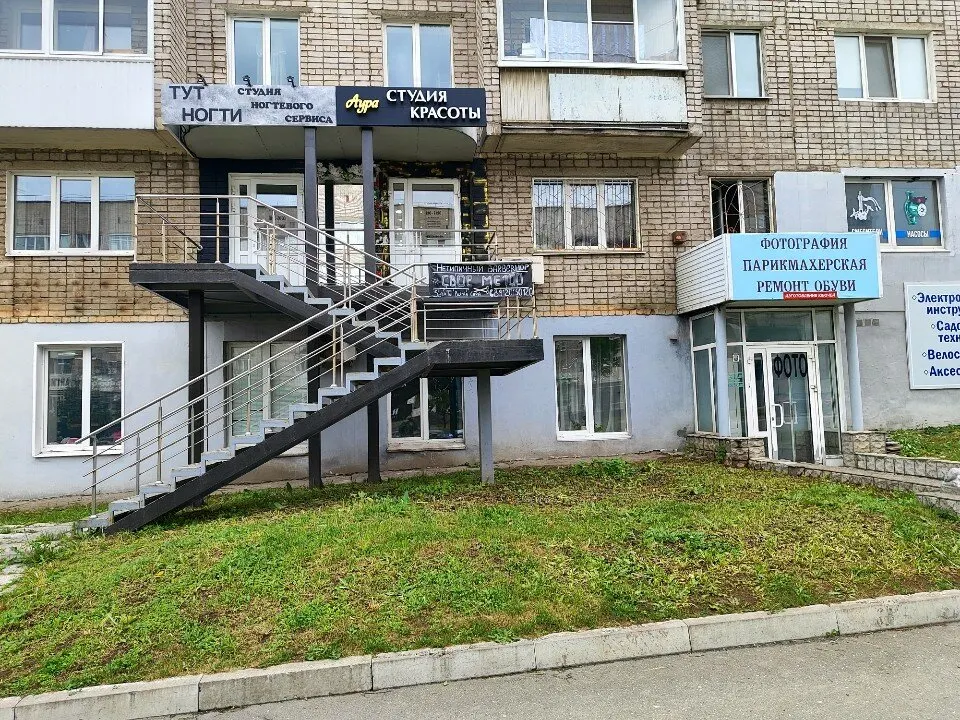
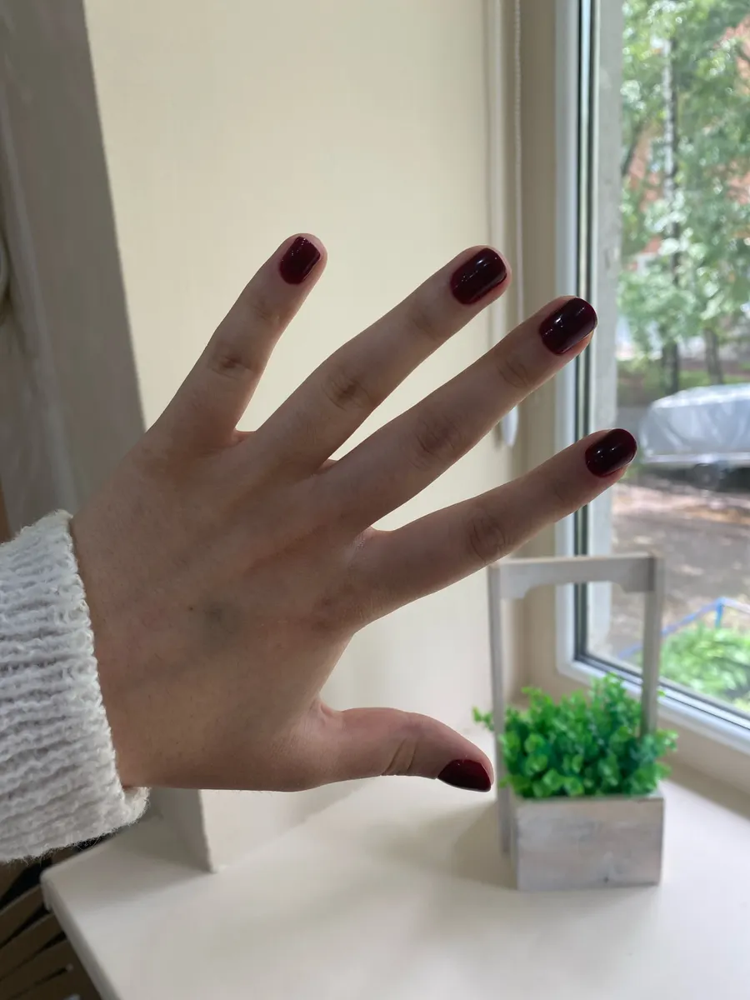
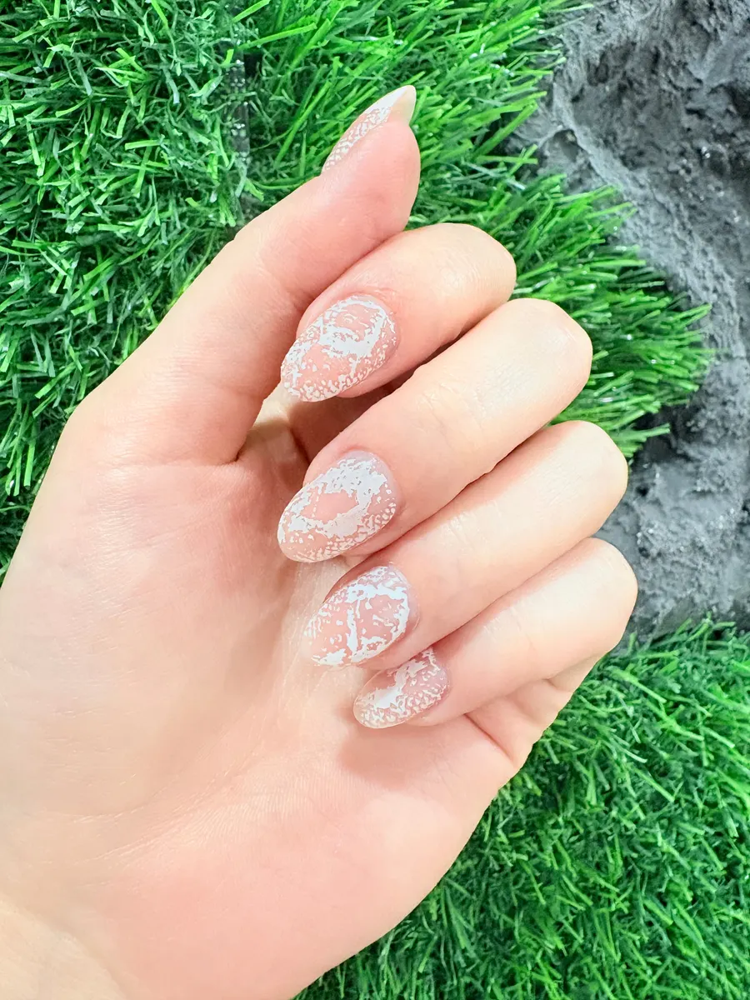
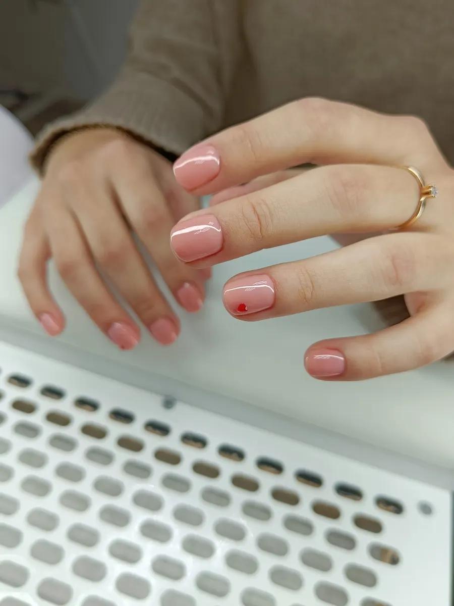

Студия ногтевого сервиса · Ижевск
Маникюр и педикюр в Ижевске – цены и запись онлайн
Прайс с ценами, фото работ и запись на удобное время – на одной странице. Студия на Пушкинской, 171.
- Открыто каждый день, 10:00–20:00
- 4,7 на Яндекс.Картах
- Есть онлайн-запись

Услуги и цены
Цены с карточки студии на Яндекс.Картах. Стоимость зависит от категории мастера, актуальную назовёт администратор при записи.
Маникюр
- Маникюр без покрытияснятие, кутикула, форма, полировка600 ₽
- С покрытием, короткие ногтисвободный край до 3 мм1 400 ₽
- С покрытием, средняя длинасвободный край 4–7 мм1 700 ₽
- С покрытием, длинные ногтисвободный край 8–15 мм2 000 ₽
- С покрытием, экстра длинабольше 15 мм: укрепление, ремонты, дизайн2 300 ₽
- Детский маникюргипоаллергенные детские лаки, дизайн400 ₽
- Только снятие400 ₽
- Ремонт одного ногтя250 ₽
Педикюр
- С покрытием, только пальчики1 700 ₽
- Без покрытия, всё включеновключая smart-обработку стоп1 600 ₽
- С покрытием, всё включеновключая дизайн и smart-обработку стоп2 200 ₽
Цены на карточке обновлены 24 августа представителем студии.
Как записаться
- 01
Выбираете услугу
Цена каждой названа в прайсе выше.
- 02
Пишете во ВКонтакте или звоните
Время согласуете заранее.
- 03
Приходите на Пушкинскую, 171
Второй этаж. Студия открыта каждый день с 10:00 до 20:00.
- 04
Кофе и чай во время процедуры
Об этом пишут клиентки в отзывах на Яндекс.Картах.



Что важно знать
Цены видны до записи
Маникюр и педикюр – в прайсе на странице, цена зависит от длины и категории мастера.
Стерилизация инструментов
Клиентки в отзывах отмечают чистоту и стерилизацию всех инструментов.
Любые дизайны
В отзывах пишут, что мастер понимает идею с полуслова.
Покрытие держится больше месяца
Так пишут клиентки, которые ходят к мастеру по два года.
Отзывы с Яндекс.Карт
«Хожу к мастеру Элине уже более двух лет. И всегда ногти идеальные, покрытие носится больше месяца (хоть для меня это много). Салон чистый, все инструменты стерилизуются, цветов и вариаций дизайнов море, что хочешь, то и делаешь.»
дарья к. · 18 августа
«Очень уютный салон, прекрасные мастера, сервис на высоте: ногти держатся больше месяца, делают любые дизайны, предлагают вкусный кофе и чай, а кресло для педикюра - отдельный вид кайфа. Очень рекомендую к посещению»
Диана Курникова · 24 июня
«Место просто топ! Пришла с примерной идеей, а мастер всё понял с полуслова и сделал даже круче, чем я представляла.»
Карина Беляева · 16 августа
Отзывы с карточки на Яндекс.Картах.
Запись на ближайшие дни
- Адрес
- Пушкинская ул., 171, этаж 2, Ижевск
- Часы
- Ежедневно 10:00–20:00
- Телефон
- +7 (995) 643-44-18